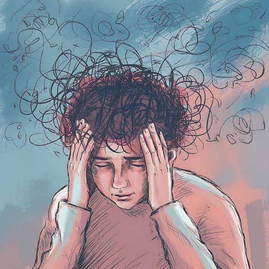
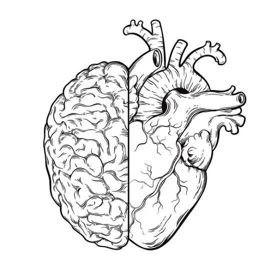

Psicologia é só para pessoas "loucas".
MITO: A psicologia atende qualquer pessoa. Ela ajuda no autoconhecimento, emoções, ansiedade e qualidade de vida.
Psicologia é só para pessoas "loucas".
MITO: A psicologia atende qualquer pessoa. Ela ajuda no autoconhecimento, emoções, ansiedade e qualidade de vida.

Usamos apenas 10% do cérebro.
MITO: Usamos praticamente todas as áreas do cérebro, apenas em funções diferentes.

Psicólogos conseguem ler pensamentos.
MITO: Psicólogos analisam comportamento e emoções, não leem mentes.
Terapia resolve tudo rapidamente.
MITO: O processo terapêutico leva tempo e depende do envolvimento da pessoa.
Psicologia é só conversa.
MITO: A psicologia é uma ciência baseada em estudos, testes e métodos científicos.
Só quem tem problemas graves precisa de psicólogo.
MITO: Qualquer pessoa pode fazer terapia para melhorar sua saúde mental e emocional.